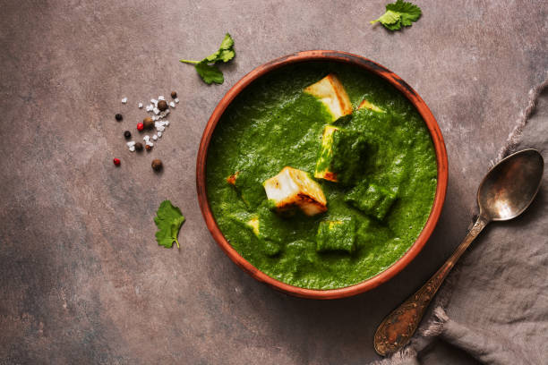

Paneer simmered in creamy spinach gravy

Ingredients
- Spinach Leaves, rinsed clean
- Shredded ginger
- Chopped fresh chilli
- Turmeric powder
- Paneer cut into cubes
- Green Peas
- Red Chilli powder
- Oil
- Cream
- Salt
- Ghee/clarified butter
Steps
-
In a pot, boil the spinach with some salt, the ginger, the fresh chilli,
and the turmeric powder
-
When soft, drain off the excess water and cool the spinach under cold,
running water to retain the color
- Puree the spinach in a food processor
- In a heavy bottomed pot, heat some oil and add the cumin seeds
-
When seeds crackle, add the ground spinach and stir over high heat
-
Continue stirring until spinach begins to thicken and appears almost
dry
-
Add in cream, the chilli powder, paneer cubes, green peas, and a bit of
salt
- Reduce the heat to simmer
- After a few minutes, taste and adjust the seasoning
-
When the gravy begins to buble, and is thick and creamy, remove from
heat
- Serve hot
Back to homepage